企业商业模式优化、商业引擎锻造、商业发展规划

商业计划书、项目建议书、区域经济发展策划论证、其它高端商业文案服务
投资融资顾问、营销管理顾问、品牌推广顾问、商业资源整合顾问，资本运作解决方案
匹效商业模式理论创始人
首席商业文案策划顾问 林明超先生
- 商业计划书及高端商业文案策划编撰专家。
- 曾任青岛啤酒集团华南公司高级市场策划、中国产权平台控股（集团）有限公司副总裁。
- 长期研究中国产权市场、国内外资本市场管理制度及运作模式，证券投资及投融资业界资深人士。
- 曾为青岛啤酒（600600.上海）、大唐潼金（8299.香港）、劳伦斯珠宝国际（纳斯达克主板：JADE）、长兴国际（0238.香港）、莫斯特集团、嘉汶服饰等多家国内外上市公司和著名企业的资本运作、商业模式、市场规划等重要项目提供策划操作解决方案。
商擎顾问能帮您干啥？
商擎顾问把企业及企业家遇到的主要困扰或问题分为三大类： 法务类、商务类和财务类，商擎顾问主要为不同阶段的企业解决商务和财务方面的问题。
您企业属于---- ？
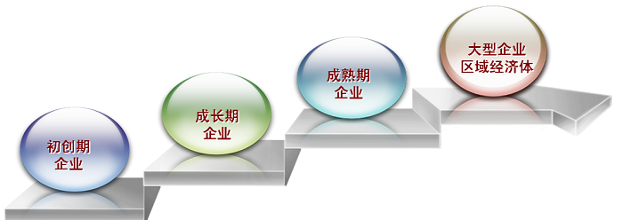
| 主要困扰 | 问题诊断 | 商擎顾问 |
|---|---|---|
| 运营：自认技术或产品很好，但运营始终打不开局面！？ | 技术迷恋症，常仅凭有限的经验和感觉经营，忽视或无力构建合理的商业模式。 | 协助优化企业商业模式，厘清平衡发展思路，就企业长远健康发展提出系列建设性意见：适用常年商业顾问 |
| 融资：自写或找别人写的商业计划书始终得不到投资人的重视或认同！？ | 只写自己最想写或能写的，不写投资人或合作者最想看的内容。同说汉语却语言不通，语法不相同阐述不到位。 | 协助企业发现价值、挖掘价值、创造价值，通过极具说服力的融资专用商业计划书吸引投资人投资从而实现价值：适用专项文案策划服务 |
| 主要困扰 | 问题诊断 | 商擎顾问 |
|---|---|---|
| 运营：业务发展遇到瓶颈事倍功半！？ | 因外部环境和内部条件已经发生变化，造成原有发展模式逐渐失效，企业面临多重发展路向选择困局。 | 引入外部资源，重构商业模式，确定发展战略，练就内功重新发力： 适用常年商业顾问或专项管理咨询服务 |
| 融资：想融资但没有完善的商业计划书或始终得不到投资人的重视或认同！？ | 外部环境和内部条件变了，经营策略和发展思路多了，企业潜力和品牌价值大了，难以到位地阐述无法将应有价值呈现给投资人。 | 调研沟通策划撰写全面展现新思路和企业价值的具有高度说服力的商业计划书及安排投资机构对接：适用商业计划书策划撰写服务/融资顾问 |
| 主要困扰 | 问题诊断 | 商擎顾问 |
|---|---|---|
| 运营：业务发展放缓迟迟无法突破！？ | 企业规模大后开始庞杂，各业务组快关系混乱，业务发展动力系统老化，后劲乏力，方向摇摆。 | 寻找、确定、锻造企业“商业引擎”，重构企业前行的内在动力源： 适用专项管理咨询服务 |
| 融资：没有全面体现新思路的商业计划书或始终得不到投资人的重视或认同！？ | 商业模式各要素不匹配，商业计划与资金安排不对应，回报退出安排或量化分析不合理。 | 调研沟通策划撰写全面展现企业商业模式、商业基础、商业计划和商业分析的具高度说服力的商业计划书：适用高端商业计划书策划撰写服务/资本运作顾问 |
| 主要困扰 | 问题诊断 | 商擎顾问 |
|---|---|---|
| 运营：计划投资新项目，但只有思路没有高质量的项目建议书（可研报告）！？ | 无法向政府、合作者、董事会、管理层等全面推介拟投资项目的情况，特别是政府明确要求大型项目一定要有高质量的项目建议书 （可研报告）。 | 即使企业家只有拟建项目的初步思路和基本要点，也可在充分沟通及调研后为您完成符合要求的高水平项目建议书和整套申报文件，为项目立项和推介创造良好条件：适用高端项目建议书策划撰写服务 |
| 融资：想融资、并购、上市，只有想法没有可行做法及具有说服力的操作方案！？ | 对投资机构的资金既渴求又畏惧，对今后一系列资本运作的步骤和内容缺乏了解，屡屡错失良机。 | 通过“融智-融资-上市安排服务链”提供商业及资本运作整体论证及操作方案，企业省时省事省心：适用资本运作总顾问 |
| 主要困扰 | 问题诊断 | 商擎顾问 |
|---|---|---|
| 本区域有某些有利条件， 却明显落后于情况类似的地区！？ | 区域功能定位存缺陷，内部资源配置不合理，外部资源整合欠渠道，区域发展驱动力缺位… | 联合国内外相关行业权威专家团队，通过区域经济相关规划进行定位及战略论证、寻求上级政府政策支持，挖掘、锻造区域“商业引擎”：适用区域发展策略顾问 |
商擎顾问有哪些强项？
| 企业名称 | 深圳市嘉汶服饰有限公司 |
| 所属行业 | 服装，中高端女装“KAVON”品牌运营商 |
| 服务内容 | 商业顾问，融资服务，上市安排 |
| 直接效果 | 《KAVON卡汶商业计划书》采用“匹效商业模式”理论体系，“以图表阐述，用数据说话”，全面论述行业及企业的经营环境、潜在价值、市场前景、商业模式、商业计划和投资机会分析等，达到对企业管理层以七发，对潜在合作者以说服的良好效果。业务团队根据卡汶的具体情况奔着“客户价值最大化”的理念在商务、财务、法务各方面提出一系列资源整合和资本运作建议，逐步实施，效果良好。 |
| 客户评价 | 服务十分满意，效果超乎预想 |
| 企业名称 | 香港莫斯特集团有限公司 |
| 所属行业 | 国际贸易服务，中俄贸易服务龙头企业 |
| 服务内容 | 商业顾问，融资服务 |
| 直接效果 | 《莫斯特中俄贸易服务链商业计划书》全面提炼总结莫斯特集团的独特商业模式，完善公司商业计划。为客户在全国业界首次提出“贸易服务链”概念，建议清理锻造“莫斯特中俄贸易服务链”（获吸纳且全力宣介），并将为“联想集团”开辟独联体市场案例建设成“样板工程”，为后来争取浪潮集团、美的、珂罗娜、比亚迪、台湾纬创、富士康、裕同集团、力帆汽车、长安汽车、四川长虹、中联重科等重量级客户奠定基础。 |
| 客户评价 | 独特视角，价值发现，物超所值 |
一、独特的创作体系 ＝ 文件说服力更强
商擎顾问团队二十多年来参与调研和提供服务的各个阶段企业数以千计，深刻理解各种企业各个阶段的困难和问题。通过长期的高端商业文案、资本运作文件以及各种强说服力报告的策划撰写服务实践，独家总结出“匹效商业模式”、“商业引擎”等商业运营理论体系和论证分析工具以及高 强说服力文案创作框架体系，加上深厚的跨行业知识积累和丰富的文案撰写经验，使得出品的专业文件具有很强的说服力，获得客户的高度赞赏。
二、完善的服务链条 ＝ 发展路线图更清
商擎顾问根据不同行业、不同阶段的企业发展需求节点提供量身定制的服务方案和文件作品。针对很多企业的商业运作或融资并购等同时需要多个环节、多个层面帮助的现实情况，商擎顾问通常依靠从商业运作到资本运作洞悉全程的优势，根据企业的具体情况和发展要求提出关于企业发展、做大做强、挂牌上市等一系列环环相扣的操作建议，并整合相关服务和业务资源构建相应的服务链支持帮助客户企业，为企业日后管理规范化走向资本市场预先铺好管线，减少纠错成本。企业的直接得益是：发展路线图更清晰，外脑助力更贴心，少走弯路，做大做强、走向资本市场更省时、省心、省事。
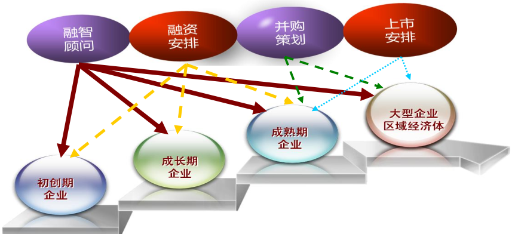
三、高端的专业视角 ＝ 项目投融资更顺
商擎顾问擅长为企业发现、总结、提炼现有价值，挖掘企业本身都没有意识到的潜在价值，通过重构商业模式、锻造商业引擎、整合商业资源为企业创造新的更大的未来价值，通过合理匹配的商业及资本运作解决方案提高企业的融资效率并在融资退出时实现价值最大化。
商擎顾问有哪些经典案例？
- 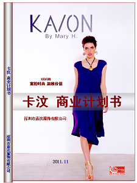
- 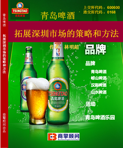
- 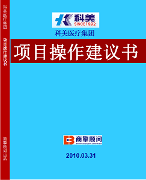
- 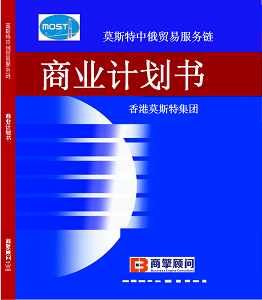
- 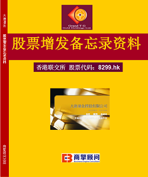
- 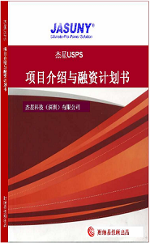
- 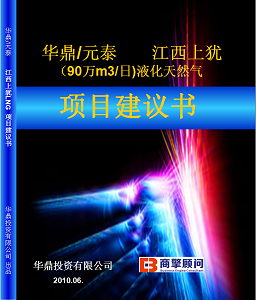
-

- 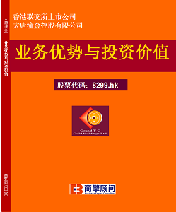
- 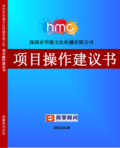
- 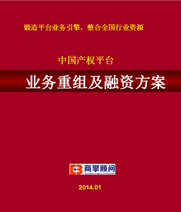
- 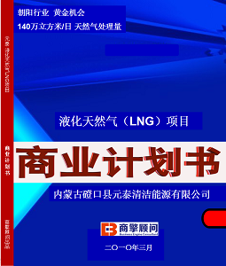
- 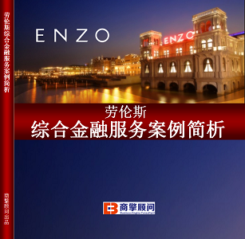
- 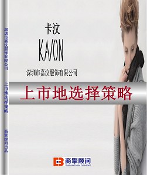
- 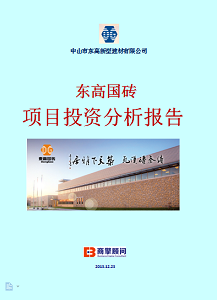